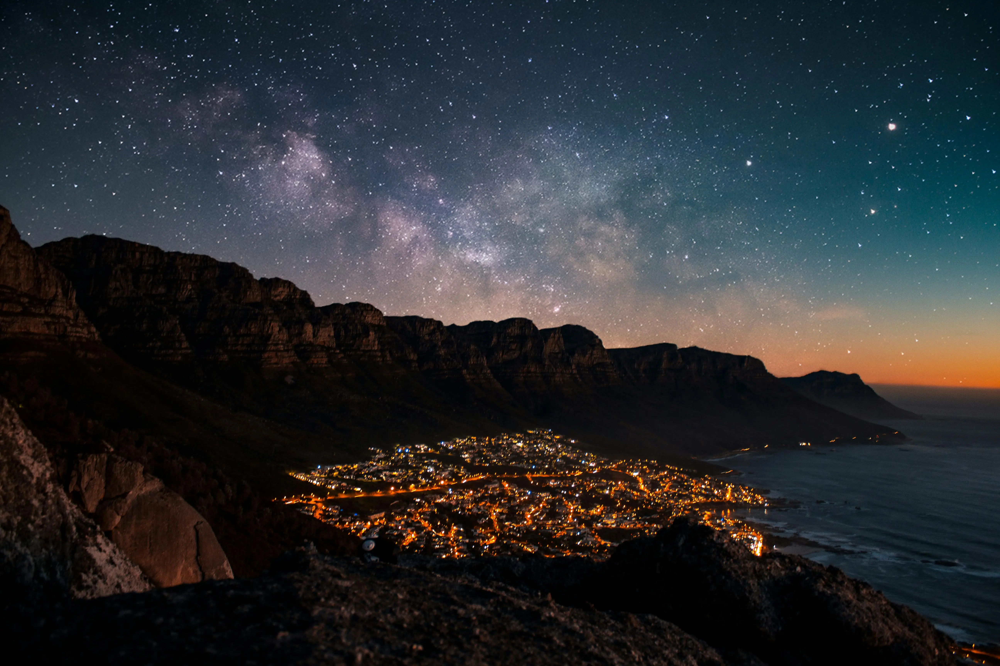
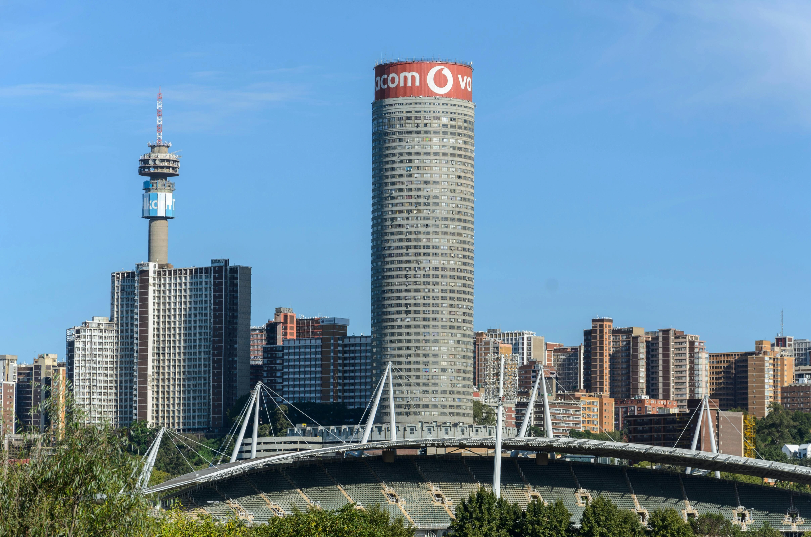
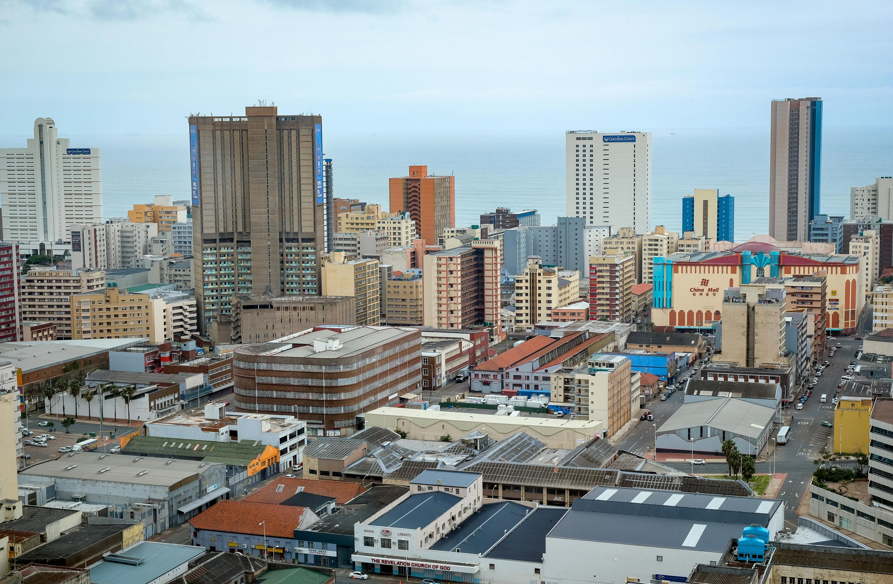
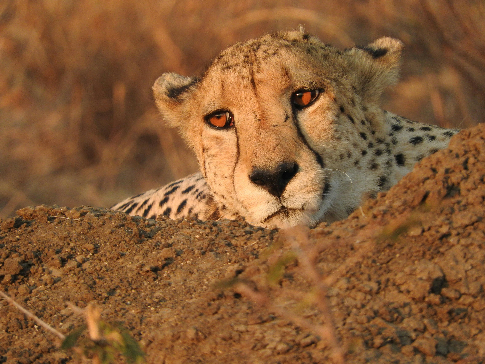
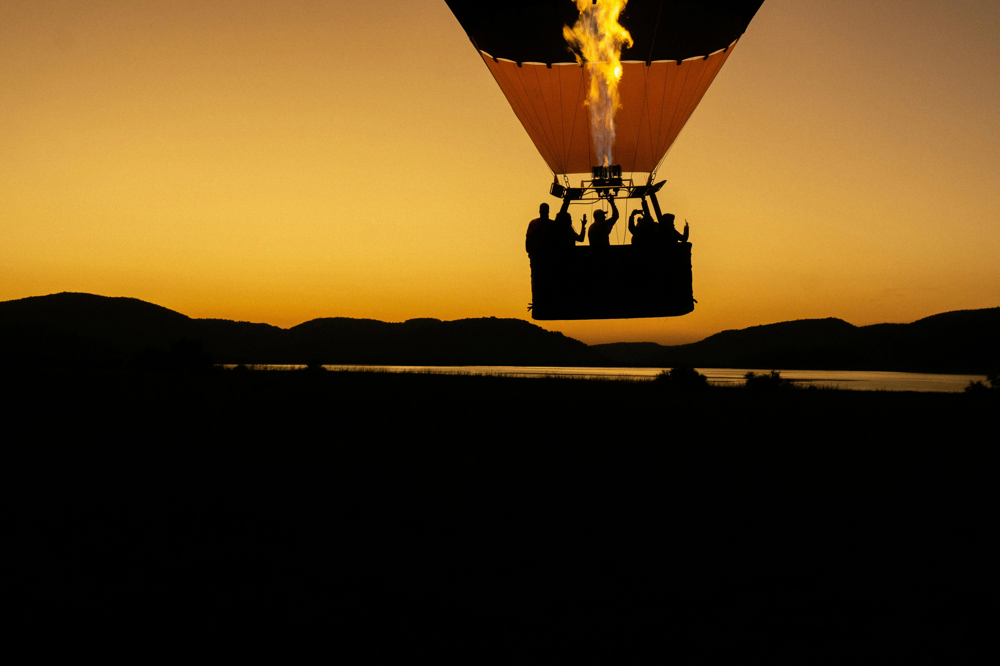

Stunning Destinations
Home to stunning beaches, diverse wildlife, deep-rooted traditions and more; South Africa never disappoints!

Cape Town
If you're looking for some of the best South Africa vacation ideas, look no further than Cape Town. Consistently voted as one of the top vacation spots in the world for families, couples and solo travellers, Cape Town is one of the best places to visit in South Africa.

Johannesburg
In the past, visitors to South Africa whizzed through Johannesburg, stopping just long enough to catch their connecting flight. Nowadays, however, Johannesburg (or Jozi as it's known to locals) is one of the most exciting places to visit in South Africa. Boasting a fantastic selection of hotels and guest houses, a thriving café culture, budding restaurant scene and thrumming night life, Jozi offers its visitors a unique perspective of urban South Africa.

KwaZulu-Natal
It's often said that locals know best. When South Africans go on a vacation, their favourite choice is often KwaZulu-Natal (KZN). From the broad beaches of its sunny subtropical coast to historic battlefields among soaring mountain peaks and beautiful Big 5 game reserves, KZN has some of the best South Africa vacation spots for bush and beach combinations.

Madikwe Game Reserve
About a five-hour drive, or short charter flight, from Johannesburg lies one of South Africa's least known game reserves: Madikwe. Its Kalahari grasslands and woodlands are surprisingly full of animals, a haven for the Big 5 and endangered wild dog. Unique desert specialists like brown hyena and the rare aardwolf also thrive here. Madikwe offers fantastic family-friendly South Africa vacation ideas, incredible game viewing and exquisite safari lodges.

Pilanesberg National Park
Set within the crater of an ancient volcano and centred around a large hippo- and croc-filled lake, the Pilanesberg National Park is one of the best places to visit in South Africa if you don't want to travel far from Johannesburg to enjoy a fantastic safari experience. Although conveniently close to Sun City, these two top destinations feel worlds apart.